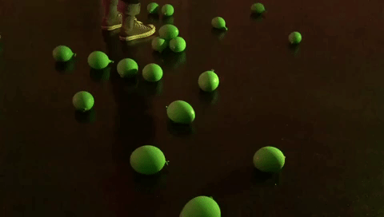

Loving Things was a series of videos about how to love
inanimate things. Through meditative attention and playful gestures which displace the usual function of
objects, as well as voiced texts that alight on quantum physics and new materialism, the videos invite
the viewer to look more deeply into objects as 'vibrant matter' (Jane Bennett).
Loving Things was made available for purchase as a downloadable album of videos, both as a
response to Covid-19 restrictions, as well as a way of experimenting with the presentation,
distribution, ownership and consumption of performance.

Producer, Video Editor, Writer, Performer
Ang Kia Yee
Administration & Communications
Jenson Gabriel Tan
Art & Marketing Direction
Hanae Gomez
Production & Art Design
Louise Marie Lee
Director of Photography
Philip Ho
Production Assistant
Tan Xing Zhi
Funded by
Our SG Fund (Ministry of Culture, Community & Youth)
Young ChangeMakers Fund (National Youth Council)
With thanks to
Ong Kian Peng
Nick Ng
Clara Lim
Justin Noah Chua
Clara Potter-Sweet
Ben Kulvichit
Maria Monterio
Performance
Online / October 2020
I revisited Loving Things in 2021 as Loving
Things (to say), a
live performance under free performance series eXchΔnge
by the Esplanade.
It was a short, gentle extension of motifs within Loving
Things, with greater attention to sonic possibilities around voice, and a more direct addressal
of ecological anxiety and species extinction.
Writer, Performer
Ang Kia Yee
Performance
Esplanade Concourse / 8 & 9 September 2021
✶